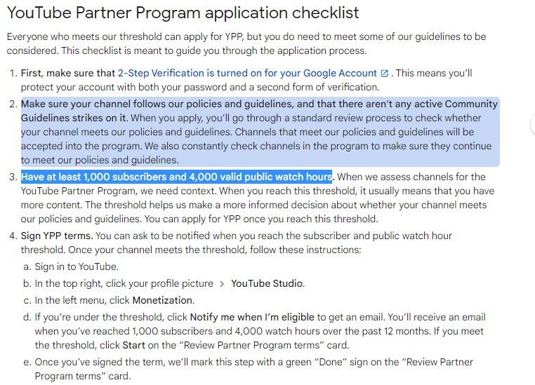

Buy Legit YouTube watch hours - Top Features
Process that is 100 percent secure
Your privacy is important to us. Therefore, we've built a robust procedure that has no flaws and is completely safe (SSL certified) and secure from beginning to end with PayPal integration. We utilise organic tactics like SEO and SMO to promote your YT channel among actual/real people who use social media regularly to deliver non-drop YouTube watch hours to users who buy legit watch time on YouTube. Your YT channel will not be harmed by our service. We have served more than 1,00,000 channels, and not a single channel has got suspended. We never require your account password or any private info, so it's 100% safe.
Privacy Policies That Are Strict
We recognise that our clients entrust us with their personal information, when they buy watch hours for YouTube monetization, and we respect that trust. Real Subscribers treats your personal information, such as your name, phone number, and YT channel information, with the utmost care and attention. We are a very ethical organisation that adheres to a rigorous privacy policy, so your information will be secure with us.
Supportive Customer Service
We respect our clients' time and strive to assist them with any concern or question they may have regarding our procedure of buying YouTube watch time cheap way. You may easily contact us by email, and we will react to your message within 24 hours. Customer satisfaction is a top concern for us, and we give each client our full attention.
Quick Shipping
To keep our customers satisfied, Real Subscribers believes in working effectively and executing orders as quickly as feasible. We immediately begin working on a client's YT channel when they enter their personal information on our secure website and activate our service plan by making a payment. In order to quickly increase YouTube total watch time, we rigorously adhere to the best organic standards.
Get Bang for your Work with purchasing Non-drop watch hours
Many of our consumers have inquired to buy YouTube watch hours cheap and organically, and if these YT watch times are permanent and would not diminish with time. We want to reassure you that we will supply you with constant and uninterrupted YT viewing hours. This is because we show your videos to individuals who are interested in your topic and who will actually watch them. If in any case your channel doesn’t get the assured watch hours or subscribers within the expected delivery time, you will have the right to ask for the refund.
Why buy watch time for YouTube from Realsubscribers.com only?
Unbeatable Knowledge of YouTube Algorithm
For sharing videos or advertising, there exists no other platform as rewarding as YouTube. It is the world’s second-most visited website. The platform wants audience to stay on it. To decode which videos and channels users are most expected to enjoy watching, YouTube algorithm “tracks” their audience, which means they examine their users’ engagement with each video they watch. Successful YouTube promulgation requires in-depth knowledge of how the marketing channel behaves and operates. Fundamentally, when users buy watch time for YouTube from us, their videos are favoured over others and gets located on the home page. It signals to YT that the video is worth watching and that it is providing a constructive understanding to users. We give creators and brands, opportunities to become popular very quickly and make money online.
Get YouTube watch hours
Real Time Data Collection of Target Audiences’ Behaviour of Every Niche
When you get watch hours on YouTube from us you can have guarantee that as many of your target audience as possible succeed to see your posts/videos. YouTube has over 100 local versions around the globe which permits you to navigate the podium in over 80 different languages. It is expanding its analytics proficiencies by showing video creators when their audience is most likely to be online. YT always provided creators access to basic demographics data like age, gender, location, etc. of the viewers. We leverage these data to get insights and understand the audience far beyond the rudimentary demographics and this way you get watch time for YouTube channel.
YT’s hottest project, which is now in the initial stages of development, is the capability to let creators know when their audience is online.
In YouTube own words, “We refreshed how viewers engage with content, from improving core experiences like search and the infrastructure that powers the platform to advancing across apps and formats like it’s TV, Shorts and Music. We also introduced new ways for creators to make money and brought more choice for parents to guide their families' experiences. And along the way, we partnered with creators to empower them to do what they do best.”
Buy legit YouTube watch hours
Providing Real People – The Target Audience and Not Bots
YouTube has 2 billion active users every month and over 30 million daily users who watch 1 billion hours of videos daily and an average visitor spends 41.9 minutes on YouTube (Hootsuite.com)
We also learned that in March 2021, users worldwide spent an average of 1777 seconds (29 minutes and 37 seconds) per user per visit on YouTube.com, approximately 3% more time equated to the same month in 2020. We decoded the algorithm accordingly and therefore provide people that are authentic and real. To avoid getting penalized, for artificial engagement from robots, you can trust us to purchase watch time on YouTube.
Many people purchase YouTube watch hours through a generator. These are YouTube watch time through bots, consequently their channel gets banned because of unnatural hours that’s get easily detected by it’s algorithm. This may even lead to suspension or termination your channel. On the other hand, if you buy 4000 watch hours on YouTube legit from our trustworthy service, we guarantee you 100% risk-free as we take work in favour of the algorithms- both YouTube and Google.
As, you unquestionably require non-bot watch time from a quality supplier and win the YT’s algorithm’s reverence to break the hurdle that stops you from making money on the podium.
When you buy cheap YouTube watch hours, all of the watch time we send to you is carried out through real YouTube user accounts. This makes the probability of the algorithm detecting "something's odd" to nil. As, TV was once again YT’s fastest growing screen in 2021 — as of January 2022, on average, viewers are watching over 700 million hours of YouTube content on TV daily!
We leverage the story, and let your target audience to connect with you through likes, comments, shares and subscriptions. For example, your channel niche is travel. We use our surveyed information and find the target group. Then after playing all organic tactics to reach them, we also have innumerable desktops, laptops, tabs, and mobiles to let your video play. When YT analyses your watch time throughout the affiliate review. Then it is noticed that you have diverse watch times from varied locations, this time is deliberated to be obtained organically. And you will never have difficulty in any regard due to the respective service.
Note: To, buy 4000 watch hours on YouTube cheap it is necessary to search for trustworthy sources. Regrettably, not all service benefactors are loyal to their customers. They deliver fake watch hours that only stay noticeable for a short period of time.
Our System is Updated According to YouTube’s Guidelines, Trends and Notions
81% of internet consumers ( According to Statista) have used YouTube. On the other hand, 80% of U.S. parents of children 11 and under say, their kids watch videos on it.
And 53% of those parents (According to Pew research) say their child watches videos on YouTube at least once a day. In YT’s own words, “We Remove content that violates our policies, Reduce the spread of harmful misinformation and borderline material, raise up authoritative sources for news and information, and Reward trusted Creators.” So, we never promote any content that violates any community guidelines of the platform. Furthermore, we leverage trends to the best to make your creations go viral. For example, sports viewership on YT is projected to reach 90 million by 2025 (According think with google) So, we can easily provide a sports channel, watch hours very speedily.
We also scrutinized features introduced by the platform in 2021 such as Shorts, Live streaming, Chapters, Premieres and Community Tab to encourage content creation and positively attract more subscribers.
Either we associate hashtags, pattern interrupts and incentives to lift the banner of your YT account.
In YT’s own words -
“we’ll continue to invest across our multiple formats: Shorts, Live, and video on demand (VOD). And in the months ahead, we will bring even more engagement and monetization options across all three formats. In 2021, we reached the incredible milestone of 2 million creators in the YouTube Partner Program.”
Experts on Board to Modify Creators into Influencers
At realsubscribers.com, we do not reveal any creators’ information such as name, channel name, email IDs, Phone numbers and Bank details, which we obtain from our customers under the confidentiality agreement, with any other third person or brand, or individuals especially competitors under any conditions. With us your information is in, credible hands. Absolutely, just between you and us!
Correspondingly, we have created millions of influencers on YT, who are really enjoying the perks today.
In YT’s own words, “Back in 2007, when we created the YouTube Partner Program and began sharing revenue directly with creators, an entire industry was born. Today, there are more than 2 million creators around the world in YPP, building thriving businesses from their passions. We’re continuing to invest in new tools to help creators build stronger businesses – we now provide ten different ways to make money on YouTube. Over the last three years, we’ve paid more than $30 billion to creators, artists, and media companies.”
It is not surprising, that in the U.S., 62% of users (According to statista) access YouTube every day. When the creator gain YouTube watch time from us, they can easily get monetized their channels, reach a decent follower base and enjoy innumerable benefits after becoming an influencer—an authority in their niche, who can essentially change purchasing decisions in brands’ favour.
How much Time Does Purchasing 4000 Watch Hours on YouTube Take to Get Delivered to My Channel?
YouTubers start getting watch hours/watch time within 12-72 hours. We never do it in very short period of time, because you may ring the alarm for it’s algorithm. We gradually deliver high-quality watch hours from real people from different locations, with different audience retention rate, engagement rate and watch time also. Contact us now. The whole procedure is completed within 4-6 weeks.
Naturally, the completion time of the service may also vary contingent on how many hours of watch time you want to get. Once the watch time is completed, YT reviews your account.
Buy YouTube Watch Hours for Monetization
The metric ‘Watch Time’ is deliberated to be the number one factor, responsible for ranking on YouTube. It digs into the amount of time, folks spend watching the videos and whether or not they interact with your videos. The main question is; how long the people stay hooked to your videos. Although increasing your views is easy, it can prove to be problematic to increase your watch time organically. This is where Realsubscribers.com can help you. You can buy YouTube watch time for monetization from us to promote your videos’ YouTube and Google search rankings. Within a specific period, we deliver complete watch hours to the target channel. Ours provided watch hours stay with your channel forever instead of getting removed with the time being.
Watch Time Required for YouTube Monetization
According to YouTube, you need 4,000 watch hours in the last 12 months with 1,000 subscribers to become eligible for the YouTube Partner Program YPP.

The YouTube watch time for monetization, eligibility is compulsory, which you can reach by purchasing the watch hours from a renowned company. Watch-time is most important element in determining how high your video will rank on YT and Google. The grander the average percentage, the better your video's probabilities of ranking.
Increase YouTube Watch Hours to Enjoy these Perks
Acquire Social Proof
Increased YouTube watch hours and views on your channel not only makes you eligible for monetization, but also contributes to your credibility. This further allows you to acquire social proof as huge watch hours indicates that viewers love your content.
Increased SERP Ranking
The algorithm rewards total watch hours and user engagement enthusiastically. Thus, if your videos are generating impressive watch hours, your content will be ranked higher in the search results, not only on YouTube but on Google as well.
Gain More Organic Views
Higher SERP rankings help your content gain more organic views. This puts in motion a snowball effect, thanks to enhanced organic reach. Your video shows up on recommended section, homepage, trending sections of the platform, which helps to earn more views.
Become An Authority
When a large number of people consume your content, it increases YouTube watch hours and gives an impression that your videos are loved by them and your opinions are respected. Thus, adding to your credibility. This helps you to become an authority in your niche.
In-Stream Advertisements and Attracted Sponsors
Brands would be more motivated to contact you if you had more reliability and acquaintance as a result of higher watch hours. Additionally, they habitually rely on celebrated channels with a good follower base and long viewership in terms of hours to promote their products or services. In assessment to in-stream commercials, YT does not take a share of the money you make from sponsored content. Consequently, this is the most operative technique of monetizing your channel. But, first you, need believability, as supported by a substantial following and thousands of watch hours. Hence, buy YouTube watch time hours to boost the trustworthiness of your channel, which drive more traffic and more opportunities to collaborate with big companies or other famous influencers in your community.
Affiliate Marketing and Merchandise with a Brand
You’ve seen people creating big bucks from affiliate marketing, nonetheless is affiliate marketing on YouTube something that can work for “the little channel” without great number of subscribers and a lot of content to share? Or else is making money on YouTube reserved for the few that cognize how to get in the virtuous graces of the YT supremacies that be? As, affiliate links are allowed on YouTube.
You can buy watch hours and understand how you can use the platform in amalgamation with affiliate marketing to make money as a its Affiliate. You can even sell your own branded items through a reliable outlet.
Get More Time to Frame Your Content Strategy
We will take all the responsibilities off your hands and manage everything for you, allowing you to have a good and stress-free time to plan the script for your next arrivals. Plus, you also get an opportunity to create additional channels for different niches. You can also plan contests and giveaways to boost your viewership even more.
Crowdfunding
We help creators, to craft a trustworthy channel, so that your audience is more persuaded to trust you and change purchasing decisions in your favour. Then they may also invest in your creativities! One of the modern and most prevalent approaches to earn on YT these days is through crowdfunding from subscribers.
How to Increase Watch Time on YouTube Videos?
What is YouTube Watch Time?
Watch time is the total accumulated amount of time viewers have spent watching your videos on YouTube. It is an important metric of YouTube’s search and discovery algorithm. According to YouTube’s creator academy, the goals of YouTube’s search and discovery system are dual: Help audience find the videos they want to watch and maximize long-term viewer engagement and satisfaction. In October 2012, Google’s platform rolled out a brand-new algorithm designed at gratifying video content that actually engaged viewers and kept them on the platform for as long as possible. The new algorithm now recommends videos that lead to greater Watch Time, with video views terminated being the principal signal to rank content.
YouTube inveterate the update by stating that:
“We’ve started adjusting the ranking of videos in YouTube search to reward engaging videos that keep viewers watching. The experimental results of this change have proven positive – less clicking, more watching. As with previous optimizations to our discovery features, this should benefit your channel if your videos drive more viewing time across YouTube.”
Watch Time, according to YouTube, is “The amount of time in aggregate that your viewers are watching your videos.” And, according to the Creator Playbook, “YouTube optimizes search and discovery for videos that increase watch time on the site”. It’s a key metric because it uplifts videos and channels with higher watch times in their search results and recommendations section. It does this because the more watch time a video has, the more engaging their algorithm believes it is.
As per Statista, its viewers world-wide are now watching more than 1 billion hours of videos a day, threatening to obscure U.S. television viewership, a milestone triggered by the Google unit’s aggressive embrace of artificial intelligence to recommend videos. Feeding those recommendations is an unmatched collection of content: 500 hours of video are uploaded to YouTube each minute, or 65 years of video a day, as per data by Wall street journal.
According to YouTube's algorithm, a 60-second video that is watched from the beginning to the end will rank higher than a 20- or 30-minute video that is watched only for a couple of minutes. “The corpus of content continues to get richer and richer by the minute, and machine-learning algorithms do a better and better job of surfacing the content that an individual user likes,” YouTube Chief Product Officer Neal Mohan said.
YouTube CEO Susan Wojcicki has touted the stat in the press, too, saying how overall Watch Time on the site (Think with Google) has dramatically increased year over year.
One of the most asked question on Google, Can I buy 1000 subscribers and 4000 watch hours or can I buy watchtime for YouTube?
Yes, with realsubscribers.com, you can easily buy 4000 watch hours and 1000 subscribers for your channel without getting penalized by YouTube.
Does YouTube Watch Time Matter?
Yes, it does. Here’s how: The higher it is, more likely will YouTube promote your channel through search and recommended videos.
What is the Relation between Watch Time and Ranking of a Channel?
According to an industry study by Justin Briggs (www.briggsby.com) there is a strong correlation between Watch Time and rankings in YouTube search and watch time is the most important aspects of ranking. When you get more watch time for your video, it directs a strong signal to the algorithm that it’s of high-quality. The algorithm then, ranks it for relevant keywords and promote it through related and recommended videos. Therefore, get YouTube watch time now to grow!
What is the Relation Between Watch-Time and Subscriber Base of a Channel?
The more time viewers spend watching your videos, the more your subscribers will grow! Most YouTubers love to buy YouTube subscribers to increase watch time on their channel as well as gain better rankings in the SERPs, whereas some improve YouTube videos organic reach to increase the same.
How to Check Total Watch Time on Your Channel?
- Login to your account.
- Click your profile icon in the top right corner, then select YouTube Studio.
- From the Channel Dashboard, select Analytics from the left-hand menu.
- You can study your watch time in Overview section.
- Check out your watch minutes by changing time period from last 28 days to “lifetime”.
- You can see the total time in minutes (which will be discussed later in this blog)
- Now, you may be wondering, how are YouTube watch hours calculated? Total watch time in hours = Total watch time in minutes divided by 60 Another formula for measuring = Views x Average View Duration.
How to Measure Watch Time Metrics in YouTube Analytics
The Analytics Views Report, Audience Retention Report, and engagement reports will help you measure the performance of your video(s), and overall channel.
Views Report
The Views report represents the exhaustive statistics about accumulated minutes watched. The report also showcases ‘Estimated Minutes Watched’ by video, location, and by date, and shows you which viewers are protruding with, and which they are drooping off.
Audience Retention Report
Audience retention (Increases when you purchase YouTube watch time legit) is a measurement of how many viewers are still watching your video during your video playback. It also represents you the point where they stopped watching. You must optimize the first 15 seconds of each video. A high drop-off rate here would specify that your target audience is not happy with your content and are leaving to watch other creator’s videos.
Relative Audience Retention
Use this report to see how your video compares to similar videos.
Absolute Audience Retention
Views per moment as a percentage of video views
Audience Engagement Report
This report represents how engaged your target audience is, by showing how much of the video they watch.
How does YouTube Algorithm Rank Videos According to Watch Time Accumulated?
The algorithm calculates the watch hours while bearing in mind the video length to ensure fair results. It ranks videos by allotting them a score based on other performance analytics data and performance metric-watch-time. The inkling is not to
identify “good” videos, but to match target audience with videos that they want to watch. If you still have a question in your mind, how do you buy organic YouTube watch time?
You can easily buy from us.
The target goal is that they spend as much time as possible on its platform (and consequently see as many ads as conceivable)
Buy Organic YouTube Watch Hours Now!